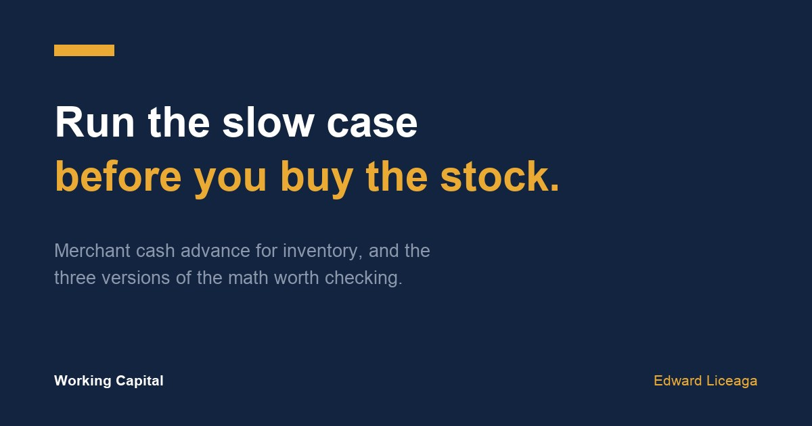

Merchant Cash Advance for Inventory: Run the Slow Case Before You Buy
The payment is fixed when you sign. How fast the stock sells is not.

Buying stock ahead of a season is one of the most common reasons owners ask about fast capital. A retailer before the holidays, a parts supplier before spring, a shop that can get a better price by buying a full pallet instead of half of one.
A merchant cash advance for inventory can make sense in all of those cases. The math only works if the stock sells, though, and most owners check the version where it sells on schedule. The version worth checking is the one where it does not.
Two things are fixed when you sign
An advance has a payback amount, set at signing, and a payment, usually daily or weekly, that keeps coming out of your account at the same amount until the payback is done. I went through how that cost works in factor rate vs interest rate explained.
Neither of those moves when sales slow down. The stock can sit on the shelf for an extra month and the payment still goes out on Tuesday. So the useful question before using a merchant cash advance for inventory is what the payment looks like against each way the season could go.
An example, with round numbers
This is an illustration, not a client file and not an offer.
A shop wants $30,000 of stock. It expects to sell all of it in about eight weeks at a 40% gross margin, which means about $50,000 in sales. It takes a $30,000 advance with a $39,000 payback, so the money costs $9,000. The payback is spread over about 26 weeks at $1,500 a week.
Case one: it sells on plan
The stock brings in $50,000 over eight weeks. Pay back $39,000 and about $11,000 is left before rent, payroll, and everything else the business carries.
This is the case most owners run. It answers whether the purchase is worth making if everything goes right. It says nothing about whether the business can carry it if something does not.
Case two: it sells, slowly
Say the same stock takes sixteen weeks to sell instead of eight. It still brings in $50,000, so the $11,000 is still there at the end. It just arrives over four months instead of two.
The payments do not stretch to match. For those sixteen weeks the shop is collecting about $3,125 a week from the stock while $1,500 a week goes out. That still covers the payment. Anything else the owner planned to do with the profit waits twice as long, and if the first few weeks are quiet, the payment comes out of the account before the stock has paid for anything.
Check the slow weeks against the account after rent and payroll. If there is room left over, case two is survivable.
Case three: half of it sells
This is the case that decides whether the advance is sized right. Half the stock sells at full price, about $25,000. The other half gets marked down and clears for what it cost, $15,000. That is $40,000 in against a $39,000 payback, so the whole purchase earns about $1,000.
Push it one step further. If the leftover half only clears for $10,000, the stock brings in $35,000 and the payback is still $39,000. The other $4,000 comes out of the rest of the business, in the same fixed weekly amounts, during a stretch when sales were already disappointing.
That is the number to look at before you buy. If the rest of the business can cover a gap like that in its slowest month, the advance is sized to the job. If it cannot, buy less stock or take a smaller amount.
Supplier discounts
Early-buy discounts are a common reason to take capital for inventory, and they are easy to overrate. Put the discount and the cost of the money side by side in dollars.
Using the same example: a 10% discount on a $30,000 order saves $3,000. The money costs $9,000. The discount alone does not pay for the advance. The stock still has to sell, at a margin, on a timeline the payment can live with. If it will, the discount is a bonus. If the purchase only makes sense because of the discount, it probably does not make sense.
How I would set it up
Start from the stock and work up to the amount. Decide how much inventory the season actually supports, then ask for that much. An offer larger than the purchase is not a reason to buy more.
Get the payback and the payment in writing before you compare anything. Ask how often the payment comes out and whether paying early changes the payback. Then run all three cases with your own numbers: the margin you really get, the sell-through you saw last year, and the markdown you take on what is left.
Time the request to the buy. The months a funder reads should reflect the business that is buying the stock. I wrote about picking that window in seasonal business funding, and about what the payment test looks like week to week in how much funding can my business get.
The short version
A merchant cash advance for inventory is a bet that the stock turns into cash faster than the payment drains the account. Price the case where it sells slowly, and the case where half of it sells. If the business can carry the bad case, the size is right.
If you are planning an inventory buy, the application is one page and three months of statements: https://ccapsolution.com/apply/?agent=edward.liceaga
May qualify, subject to approval. Terms, amounts, and timing vary by file. The figures above are an illustrative example, not a client file or an offer. A merchant cash advance is the purchase of future receivables, not a loan. I am an independent funding partner and earn on funded referrals.